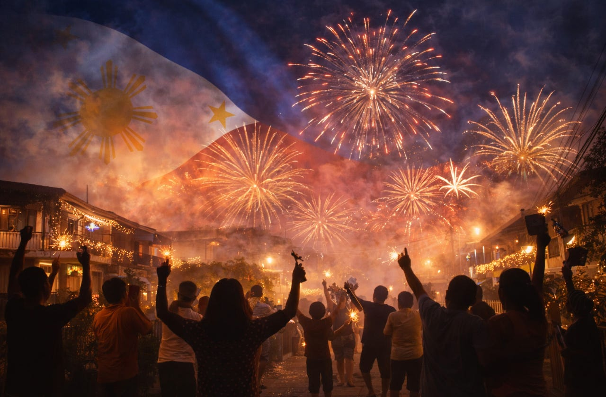
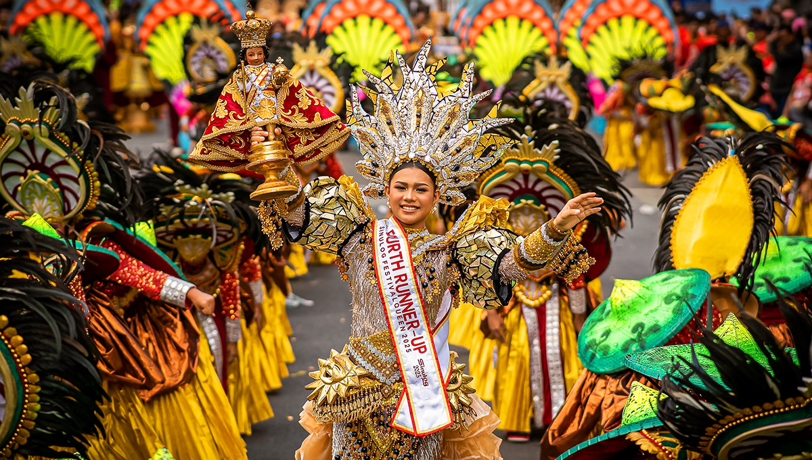
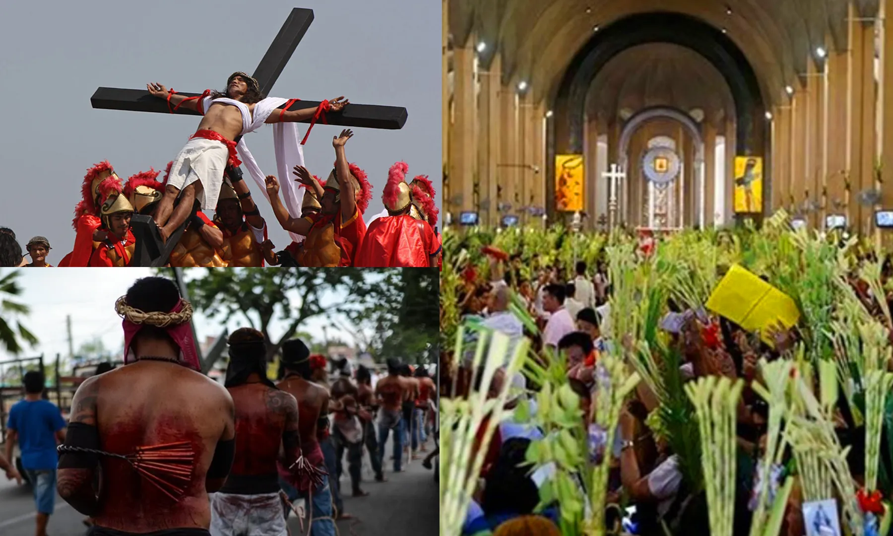
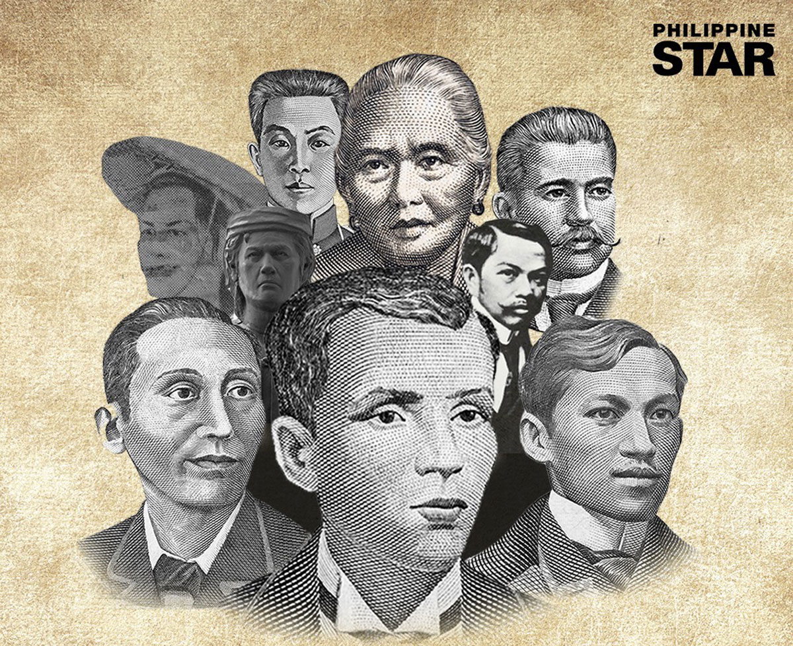
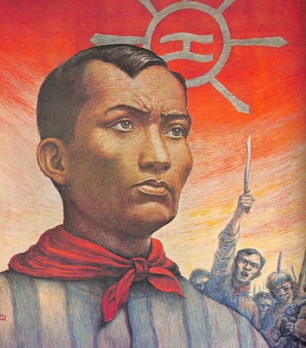
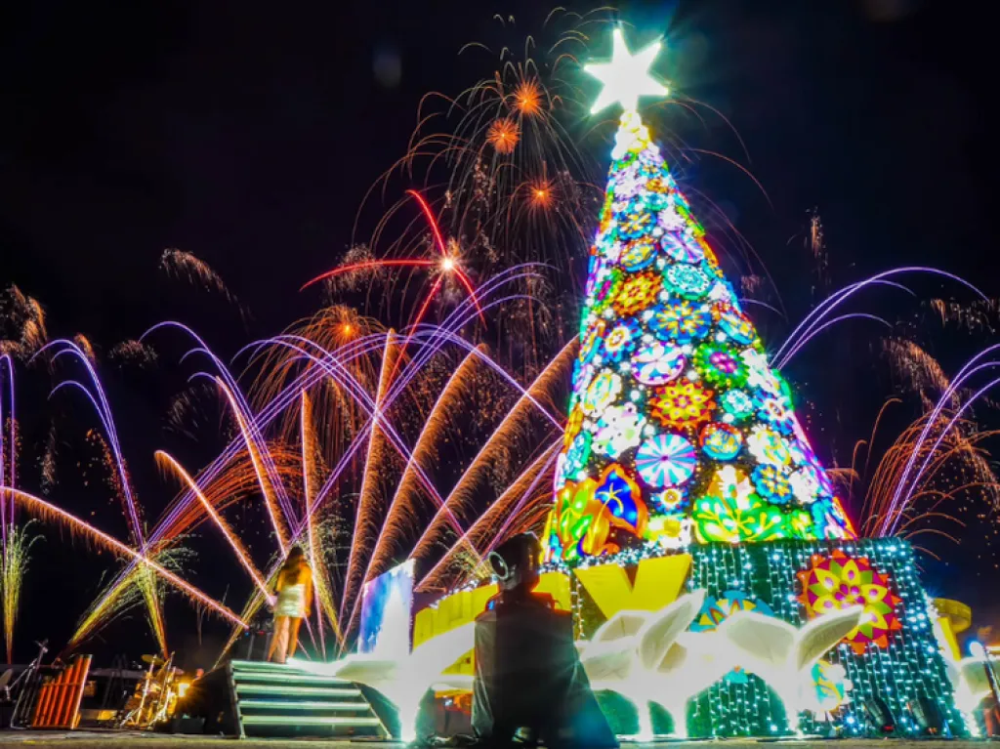
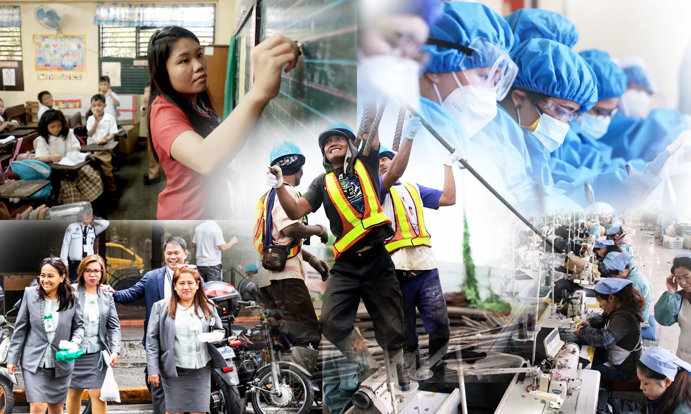

🕯️ Philippine Holidays & Events
The Philippines has many holidays and celebrations throughout the year. Some honor important events in Philippine history, while others celebrate Filipino culture, traditions, and religion.

🎆 New Year's Day
January 1
New Year’s Day is celebrated every January 1 as the beginning of a new year. Filipinos often celebrate with fireworks, family gatherings, special food, and traditions believed to bring good luck.

🌺 Sinulog Festival
January
Sinulog is a famous festival held in Cebu City every January in honor of the Santo Niño (Holy Child Jesus). It features colorful costumes, dancing, music, and religious processions.

✝️ Holy Week
March / April
Holy Week (Semana Santa or Mahál na Araw) in the Philippines is the country's most significant annual religious observance, blending deep Roman Catholic devotion with unique local traditions

📜 Independence Day
June 12
Philippine Independence Day is celebrated every June 12. It commemorates the declaration of Philippine independence from Spain in 1898 and is marked by ceremonies, flags, and patriotic activities.

🕯️ National Heroes Day
Last Monday of August
National Heroes Day is celebrated on the last Monday of August to honor the heroes who fought and sacrificed for the Philippines. It is a day to remember their courage, patriotism, and contributions to the country.

🎃 Undas
November 1–2
Undas, also known as All Saints’ Day and All Souls’ Day, is observed on November 1 and 2. Filipinos visit cemeteries to remember and honor their deceased loved ones by bringing flowers, lighting candles, and praying.

🗿 Bonifacio Day
November 30
Bonifacio Day is celebrated every November 30 to honor Andrés Bonifacio, one of the heroes of the Philippine Revolution. It commemorates his bravery and his fight for Philippine independence.

🎄 Christmas Day
December 25
Christmas Day is celebrated every December 25 to commemorate the birth of Jesus Christ. Filipinos usually celebrate by spending time with family, attending church, exchanging gifts, and sharing food.

💼 Labor Day
May 1
Labor Day in the Philippines is an official regular national holiday celebrated every May 1 to honor the contributions of the Filipino workforce and advocate for workers' rights. Locally known as Araw ng mga Manggagawa, the day blends public recognition with active social movements.